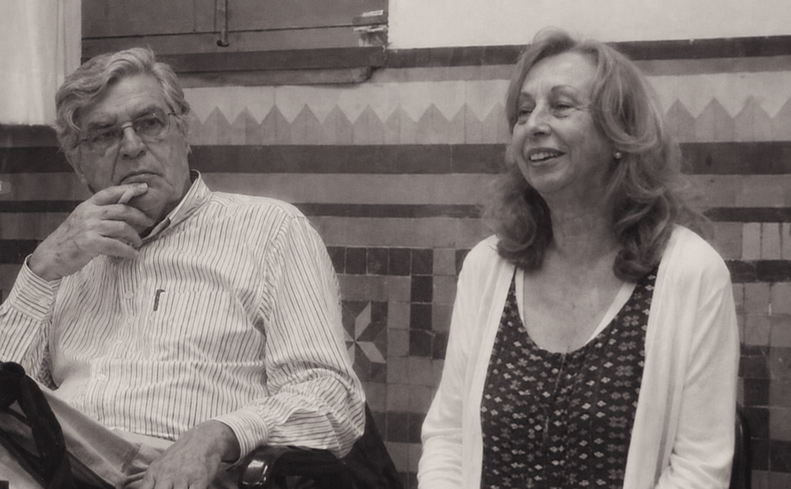

დასავლეთის მუსიკათერაპიის მეთოდები

ნორდოფ-რობინსი
ერთ–ერთი პოპულარული მიმართულებაა, რომელიც აქტიური თერაპიების რიცხვს მიეკუთვნება. ეს იმას ნიშნავს, რომ პროცესში თერაპევტთან ერთად აქტიურად არის ჩართული თერაპიის მიმღებიც. ის უკრავს რომელიმე მარტივ მუსიკალურ ინსტრუმენტზე, რომელზე დაკვრასაც არ სჭირდება წინასწარი მომზადება და მუსიკალური ნიჭი, თერაპევტი კი უმეტესად ფორტეპიანოზე უკრავს და მღერის.
ჰელენ ბონის მეთოდი
1921 - 2010 იყო მუსიკალური თერაპევტი, რომელმაც შეიმუშავა „მართვადი წარმოსახვა და მუსიკა“, რომელსაც ხშირად (GIM) - Guided Imagery and Music უწოდებენ. იგი გულისხმობს მუსიკალური წარმოსახვის ყველა ფორმას ცნობიერების გაფართოებულ მდგომარეობაში, მათ შორის არა მხოლოდ ბონის მიერ შემუშავებულ კონკრეტულ ინდივიდუალურ და ჯგუფურ ფორმებს, არამედ მისი მიმდევრების მიერ შექმნილ ამ ფორმებში არსებულ ყველა ვარიაციასა და მოდიფიკაციას.“ მართვადი წარმოსახვისა და მუსიკის მეთოდი ამჟამად თერაპევტებს ასწავლიან და დედამიწის ყველა დასახლებულ კონტინენტზე პრაქტიკაში გამოიყენება.

ემილ-ჟაკ დალკროზი და მისი ევრითმია
1892-1910 იყო ჟენევის კონსერვატორიის პედაგოგი. აქ შექმნა მუსიკალურ რიტმული აღზრდისა (რიტმული გიმნასტიკა) და შესაძლებლობების განვითარების სისტემები (ვარჯიში აბსოლუტური სმეისა და მუსიკალური იმპროვიზაციის უნარის გამომუშავე-ბისათვის). 1911-1914 რიტმული აღზრდის კურსს კითხულობდა ჯერ ჰელერაუს სპეციალურ სკოლაში, 1915-იდან კი მის მიერვე ჟენევაში დაარსებულ ინსტიტუტში. ამგვარი სკოლები შეიქმნა სტოკჰოლმში, ლონდონში, პარიზში, ვენასა და ბარსელონაში.

ბენენზონის მეთოდი
მისი პირადი წვლილი გამოიხატა მისი ორი დიდი ინტერესის: მუსიკისა და ფსიქიატრიის გაერთიანების მცდელობაში. მან აღმოაჩინა მისი დადებითი შედეგები სერიოზული ფსიქიატრიული დაავადებების მკურნალობაში და დაიწყო მისი გამოყენების კვლევა აუტისტი და ფსიქოზური ბავშვების სამკურნალოდ. 1966 წელს მან დააარსა „მუსიკალური თერაპიის სკოლა“ ბუენოს-აირესში, სალვადორის უნივერსიტეტის მედიცინის ფაკულტეტზე. მისი კონცეფცია ISO (ხმის იდენტობა) ითვლება საწყის წერტილად ხმისა და მუსიკის, ვოკალური და ინსტრუმენტული აღქმასა და გამოხატვაში ჩართული პროცესების სირთულის, ასევე ადამიანისა და მუსიკალური ინსტრუმენტების ურთიერთობის გასაგებად. დღეს ის მსოფლიოში მუსიკალური თერაპიის ერთ-ერთი წამყვანი ავტორიტეტია.

ზოლტან კოდაის მეთოდი
დიდი უნგრელი კომპოზიტორი, მასწავლებელი და ფილოსოფოსი თვლიდა, რომ მუსიკის სწავლება შესაძლებელია ნებისმიერი კულტურის ხალხური რეპერტუარის გამოყენებით. მისი თერაპიული ეფექტი ხელს უწყობს ინტელექტუალური და სოციალური უნარების განვითარებას. მისთვის სწორედ საგუნდო სიმღერაა სოციალური უნარების განვითარების უდიდესი შესაძლებლობა. გუნდში სიმღერა, მუსიკალურ ინსტრუმენტზე დაკვრა და მუსიკის მოსმენა ადამიანის სულისთვის საგანმანათლებლო აქტივობას წარმოადგენს. სწორედ მუსიკა აძლევს ადამიანებს საშუალებას, იპოვონ მეგობრები და შეინარჩუნონ იდენტობა. ინსტრუმენტებზე დაკვრის სწავლება შეიძლება ადამიანს თავიდან ააცილოს სოციალური პრობლემები. კოდაის მეთოდის საფუძველია:
- გუნდში სიმღერა
- ინსტრუმენტზე დაკვრა
- მუსიკის მოსმენა

კარლ ორფის "შულვერკი"
მარტივად შეიძლება ითქვას, რომ იგი ეფუძნება თამაშის ელემენტებს, რომლებიც ბავშვებს — მიმღებებს ეხმარება საკუთარი თავის შეცნობაში. ამ მეთოდს ასევე მოიხსე-ნიებენ, როგორც „მუსიკა ბავშვებისთვის“. მისი იდეები და შთაგონებები საფუძვლად უდევს Orff-Schulwerk მეთოდს, რომელიც ერთგვარად მუსიკათერაპიის საფუძველსაც წარმოადგენს. ეს მეთოდი მოიცავს როგორც მუსიკის ელემენტარულ თეორიას, თამაშს, სიმღერასა და ცეკვას, ასევე წარმოადგენს მასწავლებლებისთვის სასწავლო პროგრამასაც. ორფის მეთოდი საუკეთესოდ მუშაობს ყველა ასაკის ბავშვებთან და ასევე ჩვილებთანაც. საბოლოო ჯამში, იგი წარმოადგენს ინსტრუმენტს, რომელიც ადრეული ასაკიდან ბავშვებს ეხმარება მუსიკის გაგებასა და გააზრებაში.